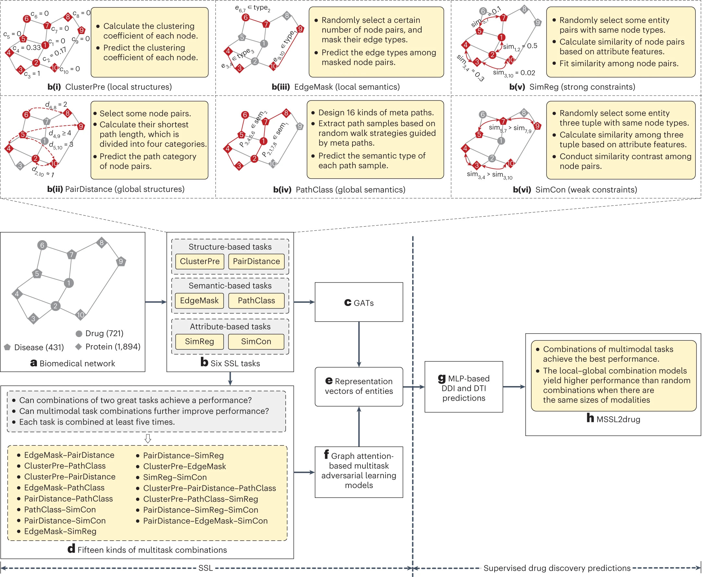

Publication
Multitask joint strategies of self-supervised representation learning on biomedical networks for drug discover
Abstract
Self-supervised representation learning (SSL) on biomedical networks provides new opportunities for drug discovery; however, effectively combining multiple SSL models is still challenging and has been rarely explored. We therefore propose multitask joint strategies of SSL on biomedical networks for drug discovery, named MSSL2drug. We design six basic SSL tasks that are inspired by the knowledge of various modalities, inlcuding structures, semantics and attributes in heterogeneous biomedical networks. Importantly, fifteen combinations of multiple tasks are evaluated using a graph-attention-based multitask adversarial learning framework in two drug discovery scenarios. The results suggest two important findings:
(1) combinations of multimodal tasks achieve better performance than other multitask joint models;
(2) the local–global combination models yield higher performance than random two-task combinations when there are the same number of modalities. We thus conjecture that the multimodal and local–global combination strategies can be treated as the guideline of multitask SSL for drug discovery.

Citation
Wang X, Cheng Y, Yang Y, et al. Multitask joint strategies of self-supervised representation learning on biomedical networks for drug discovery[J]. Nature Machine Intelligence, 2023, 5(4): 445-456.